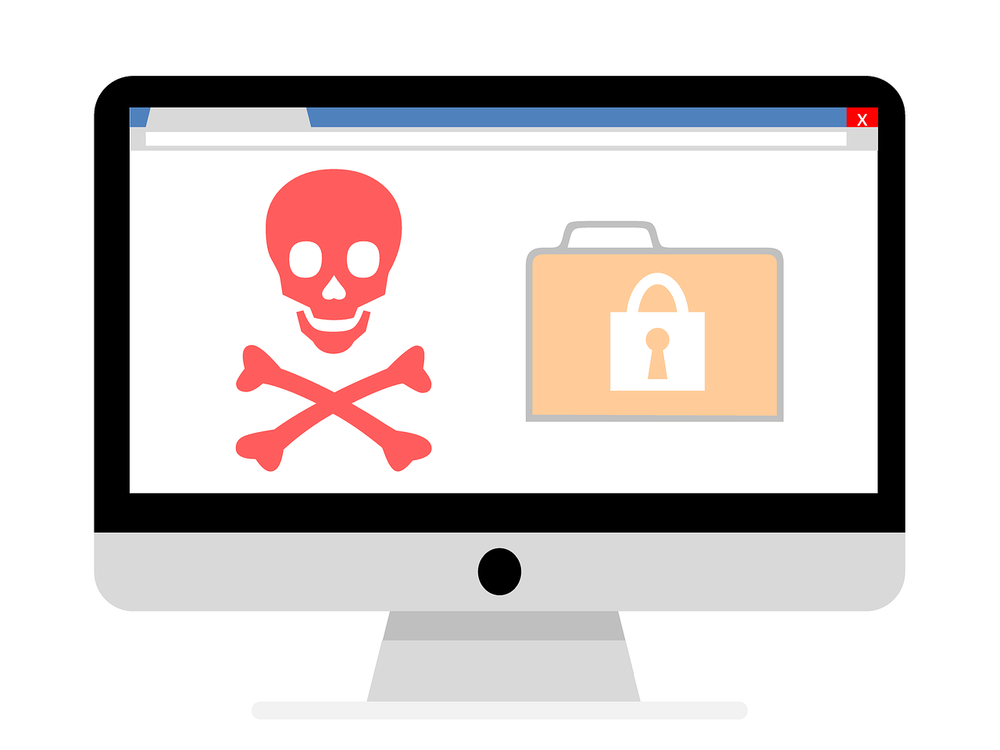

What is Learn2Surf?
Learn2Surf is a capstone project started by a group of 5 students. The intent of the project is to create lesson plans for teachers. With the use of these lesson plans, we aim to teach kids about issues with the internet. More specifically, dangers that they may come across. The internet can be a scary place and people need a guide. So, we decided that the best way we could help fight the scourge, was to create educational content for kids. While researching to see if this was a valuable endeavor, we found a distinct lack of educational content centered around equipping children to deal with dangers on the internet. We identified 3 large pain points when it came to cybersecurity. The first being authentication.
Authentication
People from all over the world struggle with making secure accounts. Whether those accounts be social media, finacial institutions, email, etc. For example, the following list is the top 10 most common passwords of 2021.
- 123456
- 123456789
- qwerty
- password
- 12345
- qwerty123
- 1q2w3e
- 12345678
- 111111
- 1234567890
Something as simple as creating a strong password is still something we strive for today. Something that can aid in strong passwords is multifactor authentication. With the use of multifactor authentication, even when someone does know your password. You still have control over who can access your account. Have you ever been asked to verify a code on your phone or email after logging into your account? That is multifactor authentication, and it is a powerful tool to ensure only you have access.By creating educational content that can teach kids why authentication is important we hope to increase the cybersecurity of the internet and protect everyone's accounts.
Phishing

Phishing is one of the most common types of cyber attacks going on in the world right now. These attacks focus on a type of attack known as social-engineering. Social-engineering is when someone attempts to decieve you in order to get you to do something. In terms of cyber attacks, attackers decieve you into giving up your credentials. Or credit card information. Obviously no one wants that to happen to them. However, by creating content around phishing awareness and what an individual can do to stop it, phishing attacks become less effective.
Malware
While phishing is on the rise in terms of number of attacks. The most common type
of cyber attack is malware. Malware is a piece of malicious software that could
damage your computer, steal finacial information or be used to spy on individuals
In recent news WannaCry, a type of malware known as ransomware, spread throughout
Europe an caused an estimated $4 billion in losses. With the threat of losing data,
money, or even your computer, malware is something to be taken seriously. So
We are creating content to help teach children about what malware is, how to avoid it,
and how they can protect themselves from it.